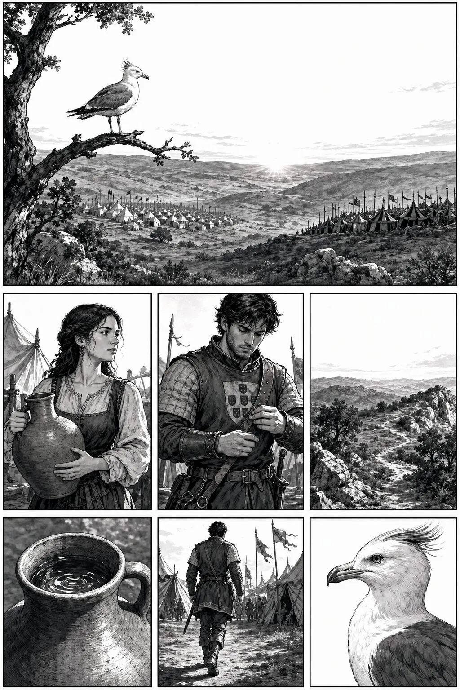
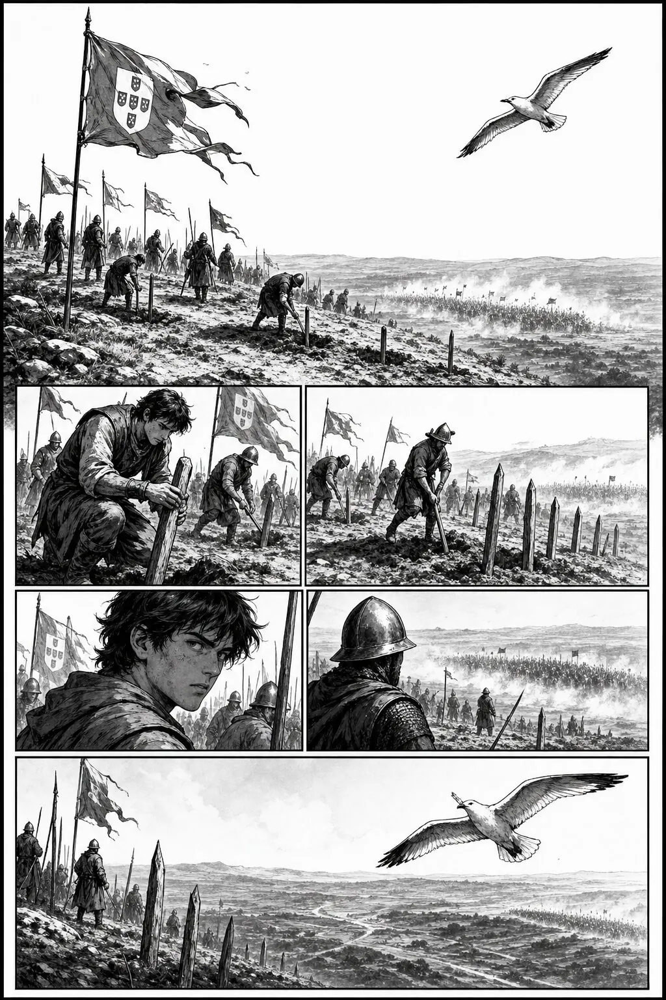
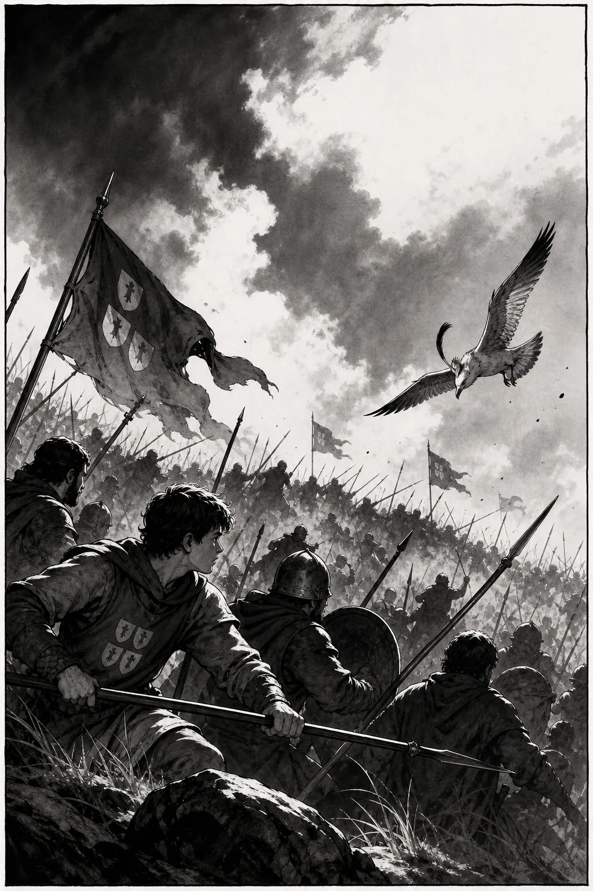
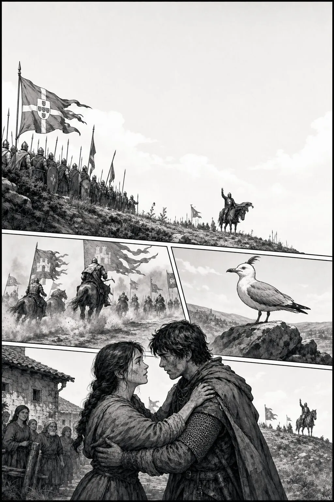
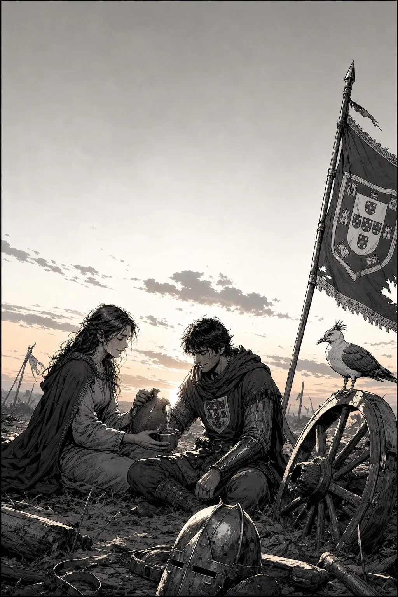

GaivotaO campo está quieto. Mas o ar… já cheira a guerra.
InêsTiago, leva água. Não vais sem beber.
TiagoSe Portugal cair hoje… não há casa para voltar.
Aljubarrota · 2/5
Rising action

TiagoO Condestável diz: esperem. Não corram.
InêsEles são muitos…
GaivotaO sol queima. A terra espera.
Aljubarrota · 3/5
Turning point

SoldadoFirmes! Firmes na colina!
TiagoNão cedam!
GaivotaA linha portuguesa… não partiu.
Aljubarrota · 4/5
Consequence

InêsTiago! Ainda estás aqui!
TiagoAinda. E Portugal… também.
GaivotaO maior exército… virou costas.
Aljubarrota · 5/5
Resolution

InêsAcabou a batalha?
TiagoAcabou o medo de amanhã. Ficámos livres.
GaivotaGuardo este campo. Portugal ficou de pé.
Study pack
100 words · PT → EN
Study pack — Aljubarrota
Read the comic once for story, once for words. Say each line aloud. Prefer Portuguese answers in the quiz.
Glossary (100)
batalhabattle
colinahill
campofield / battlefield
castelaCastile
reiking
condestávelconstable (military)
lançalance / spear
escudoshield
arcobow (weapon)
flechaarrow
capacetehelmet
armaduraarmor
cavalohorse
cavaleiroknight
infantariainfantry
trincheiratrench
estacastake / pike
calorheat
sedethirst
cântaroclay jug
aldeiavillage
aldeãovillager
vitóriavictory
derrotadefeat
independênciaindependence
invasãoinvasion
defesadefense
ataqueattack
linhaline (battle line)
frentefront
retaguardarear guard
ordemorder / command
comandocommand
disciplinadiscipline
cederto give way
voltarto return
levantarto raise / stand up
protegerto protect
livresfree (plural)
tronothrone
dinastiadynasty
avisAvis (dynasty)
agostoAugust
verãosummer
amanhecerdawn
barulhonoise
fumosmoke / dust haze
terraearth / land
carvalhooak
carrinhocart
rodawheel
correialeather strap
couraçabreastplate
estandartestandard / banner
trombetatrumpet / horn
aliançaalliance
inimigoenemy
aliadoally
estratégiastrategy
posiçãoposition
vantagemadvantage
númeronumber / count
menorsmaller / fewer
maiorgreater / larger
firmesteady / firm
firmessteady (plural)
orgulhopride
honrahonor
juramentooath
lealdadeloyalty
destinodestiny / fate
lendalegend
heróihero
naçãonation
fronteiraborder
reinokingdom
castelocastle
muralhawall / rampart
torretower
pontebridge
caminhopath / road
colina secadry hill
nunoNuno (name)
joãoJoão (name)
inesInês (name)
tiagoTiago (name)
julhoJuly
séculocentury
épocaera / age
cronistachronicler
crónicachronicle
mapamap
regiãoregion
centrocenter
oestewest
esteeast
nortenorth
sulsouth
secadrought / dry spell
sedeentothirsty
Comprehension (answer in PT)
- Onde e quando acontece a batalha?
- Quem são Inês e Tiago nesta história?
- O que o Condestável pede aos soldados na colina?
- O que significa “a linha portuguesa não partiu”?
- Como acaba a história?
Cultural note
Aljubarrota (1385) is remembered as the battle that defended Portuguese independence against Castile. João I and Constable Nuno Álvares Pereira used ground, discipline, and resolve against a larger invading force. The victory helped secure the Avis dynasty and remains a landmark in Portuguese memory — not only for armies, but for the idea of a kingdom that stayed standing.
Next
Free Ep.01: O Terramoto (1755) · Hub: series page · More paid episodes on Gumroad